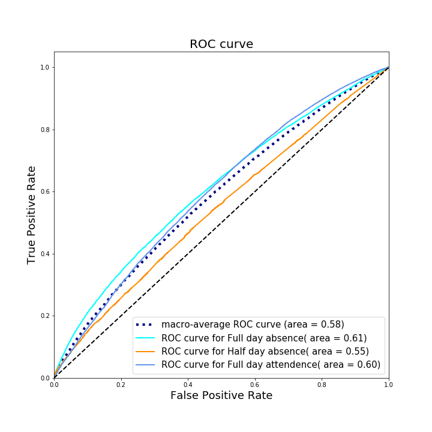

Linking Violence & Crime Data with Student Outcomes at School
Shanshan Wang &
Billy Buchanan
Fayette County Public Schools (Lexington, KY)
Grants, Research, Accountability, & Data (GRAD)
Slides available at https://bit.ly/2LkKzmq
Disclaimer/Session Norms
- This work is exploratory in nature.
- We are still very early in the process of modeling/exploring the data.
- If you have a question, do not wait to ask it.
- No one is doing this work, we expect questions and prefer the session to be more of a dialog.
Context
About Fayette County Public Schools
We served 40,535 students in the 2017-2018 academic year.
50.2% of our students qualify for free/reduced price meals.
Our families speak 90+ languages.
We transport students over 2,125,062 miles annually.
We have families that live multimillion dollar horse farms and families who struggle to pay their bills.
But there is a problem


But we will focus on a different facet of the violence epidemic.
We are going to focus on externalities.
Violence and Toxic Stress
- Shonkoff et al. (2012) find negative effects of toxic stress persist into adulthood.
- Shern, Blanch, & Steverman (2014) find detectable negative externalities from toxic stress.
- Warner (2017) suggests that the effect of toxic stress is more severe for women.
- Our District Safety Advisory Council developed a school safety plan that implicitly acknowledges these effects.
Social Stigmas and Mental Health
| Start Year | End Year | # of Articles |
| 2012 | 2013 | 61,200 |
| 2013 | 2014 | 30,400 |
| 2014 | 2015 | 61,600 |
| 2015 | 2016 | 21,400 |
| 2016 | 2017 | 46,800 |
| 2017 | 2018 | 22,400 |
The Problem
Elementary School Attendance Zones


Middle School Attendance Zones


High School Attendance Zones


The Data
FCPS Data
- Student-level Daily Attendance Records
- Student Demographics
- race, sex, grade, EL status, FRL, Special Education
- homeless/highly mobile indicator
- repeated grade indicator
- School Identifiers
Crime Data
- Statute Descriptions
- Start/End Timestamps
- Crime Location
Derived Data
- Crime Exposure
- Crime Proximity
- Attendance Day of Week Indicators
- Rolling Sum of Crimes
- Crimes within Geospatial Buffers (e.g., 0.5, 1, & 2mi)
- Minimum distances within Rolling Sums
Data Preparation
- Crime data lag attendance data by 1 day.
- Statutory descriptions reclassified from 309 to 5 distinct values.
- Standardized the proximity measure to avoid scale-based artifacts.
Methods
Modeling Challenges
- Absences are rare.
- Multiple crimes can affect attendance decision simultaneously.
- Some machine learning algorthims require too many compute resources.
- The computational cost of complex multilevel models is also prohibitive.
Model Fitting
- Random Forests
- Generalized Linear Model (GLM)
- Pooled estimators
- Complementary Log Log
- Logit
- Probit
- Fixed Effects Logit
- Mixed Effects Complementary Log Log
Results
Random Forest
Model Fit
Random Forest
Correlations

Random Forest
Feature Importance
Random Forest
Model Diagnostics

Random Forest
Model Diagnostics
GLM
Model Fit
- GLM models all had AUC > 0.5
- Some models lack established GOF measures.
- Within grade models perform poorly in grades 3-6.
GLM
Parameter Estimates
- Estimated relationships are consistently small.
- Both type of violent crime and proximity have expected relationships.
- The estimated relationship with the type of crime varies.
GLM
Model Diagnostics
- Greater classification inconsistencies with the rare events.
- Hosmer-Lemeshow tests indicate good model fit.
- Models with assymetric sigmoid seem to do slightly better at detecting the rare events.
Conclusions
Important features
- Proximity to crime seems to have some relationship with student attendance.
- The relationship also varies based on the type of violent crime.
- Male students are more likely to be absent than female students.
- Economically disadvantaged students are more likely to be absent compared with their counterparts.
Potential Omitted Variables
- Cumulative exposure effects in the long-term.
- Major exogenous shocks.
- Transportation method.
- Absence reasons.
Future Directions
- Kernel weighted average proximity of crimes.
- Accumulation effects and varying rolling windows.
- Additional exploratory work to optimize predictive power of models.
- Estimating relationship with behavior.
- Estimating relationship with academic measures.
Collaboration
- WWC is a great resource for sharing evidence.
- WWC cannot help us replicate our findings.
- If more LEAs and SEAs use tools like GitHub, we can replicate our work across sites.
- The Strategic Data Project has started to use this model for their OpenSDP initiative.
References
- Balfanz, R., Wood, M., Lofton, R., & Princiotta, D. (2016). Understanding the impact of crime & violence on students in schools. Panel presentation at the Fifth Colloquium on Unpacking Poverty and Its Impact on Student Success, Baltimore, MD: Pathways from Poverty Consortium. Retrieved from: here.
- Shonkoff, J. P., Garner, A. S., Siegel, B. S., Dobbins, M. I., Earls, M. F., McGuinn, L., Pascoe, J., & Wood, D. L. (2012). The lifelong effects of early childhood adversity and toxic stress. Pediatrics, 129(1), pp. e224-e231. DOI: 10.1542/peds.2011-2662
- Shern, D. L., Blanch, A. K., & Steverman, S. M. (2014). Impact of toxic stress on individuals and communities: A review of the literature. Alexandria, VA: Mental Health America. Retrieved from: here. Retrieved on: 24jul2017.
- Warner, J. (2017). The unequal toll of toxic stress: How the mental burdens of bias, trauma, and family hardship impact girls and women. Washington, D.C.: Center for American Progress. Retrieved from: here. Retrieved on: 24jul2017.